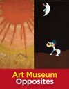
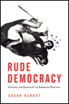
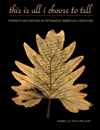

|
AFSCME's Philadelphia Story
Municipal Workers and Urban Power in the Twentieth Century
Ryan, Francis
A history of the largest union in the AFL-CIO and its growth in a major American city
320 pp • 6x9 • Fall 2010
cloth 978-1-4399-0278-3
|
|
The African Transformation of Western Medicine and the Dynamics of Global Cultural Exchange
Baronov, David
How Western medicine has transformed—and been transformed by—African culture
New in Paperback!
264 pp • 6x9 • Fall 2010
paper 978-1-59213-916-3
cloth 978-1-59213-915-6 |
 |
Art Museum Opposites
Friedland, Katy and Marla K. Shoemaker
A book of opposites for young readers, based on the Philadelphia Museum of Art’s collections
44 pp • 8.5x11 • Fall 2010
cloth 978-1-4399-0523-4
|
|
Behind the Backlash
Muslim Americans After 9/11
Peek, Lori
How Muslim-American identity has been shaped by 9/11 and its after effects
230 pp • 6x9 • Fall 2010
paper 978-1-59213-983-5
cloth 978-1-59213-982-8 |
|
The Change Election
Money, Mobilization, and Persuasion in the 2008 Federal Elections
edited by Magleby, David B.
A thorough assessment of how the 2008 elections were financed and conducted
326 pp • 6x9 • Fall 2010
paper 978-1-4399-0339-1
cloth 978-1-4399-0338-4
|
|
Circling the Bases
Essays on the Challenges and Prospects of the Sports Industry
Zimbalist, Andrew
A look at the future of the business of sports in America
234 pp • 5.5x8.25 • Fall 2010
paper 978-1-4399-0283-7
cloth 978-1-4399-0282-0
|
|
Civic Talk
Peers, Politics, and the Future of Democracy
Klofstad, Casey A.
Exploring how the simple act of talking about politics and current events with friends, colleagues, and relatives causes us to become more civically active
200 pp • 6x9 • Fall 2010
cloth 978-1-4399-0272-1 |
|
Claiming the Oriental Gateway
Prewar Seattle and Japanese America
Lee, Shelley Sang-Hee
How the interests of Seattle and Japanese Americans were linked in the processes of urban boosterism before World War II
272 pp • 6x9 • Fall 2010
cloth 978-1-4399-0213-4
|
|
From Warism to Pacifism
A Moral Continuum
Second Edition
Cady, Duane L.
Illuminating the moral views on violence, from the moral restraint of the just-war tradition through pragmatic nonviolence to principled variations of pacifism
170 pp • 5.5x8.25 • Fall 2010
paper 978-1-4399-0312-4
cloth 978-1-4399-0311-7 |
|
Higher Education and Democracy
Essays on Service-Learning and Civic Engagement
Saltmarsh, John and Edward A. Zlotkowski
A masterful collection of essays on the democratic potential of education
416 pp • 6x9 • Fall 2010
cloth 978-1-4399-0037-6
|
|
Invasion of the Mind Snatchers
Television's Conquest of America in the Fifties
Burns, Eric
How the baby boomers learned about the world in their most formative years
352 pp • 6x9 • Fall 2010
cloth 978-1-4399-0288-2 |
|
Live Wire
Women and Brotherhood in the Electrical Industry
Moccio, Francine A.
Sisters of The Brotherhood struggle for equality
New in Paperback!
288 pp • 6x9 • Fall 2010
paper 978-1-59213-738-1
cloth 978-1-59213-737-4
|
|
On the Margins of Citizenship
Intellectual Disability and Civil Rights in Twentieth-Century America
Carey, Allison C.
The history of civil rights for people with intellectual disabilities in 20th century America
New in Paperback!
286 pp • 6x9 • Fall 2010
paper 978-1-59213-698-8
cloth 978-1-59213-697-1
|

|
Mulan's Legend and Legacy in China and the United States
Dong, Lan
Heroic women warriors as reflections of social and moral values
280 pp • 6x9 • Fall 2010
paper 978-1-59213-971-2
cloth 978-1-59213-970-5 |
|
Music, Disability, and Society
Lubet, Alex
How musicians can be disabled and how musicality itself can be disabling
208 pp • 5.5x8.25 • Fall 2010
paper 978-1-4399-0026-0
cloth 978-1-4399-0025-3 |
|
The Politics of State Feminism
Innovation in Comparative Research
McBride, Dorothy E. and Amy G. Mazur
Addressing essential questions of women's movement activism and political change in Western democracies
318 pp • 6x9 • Fall 2010
cloth 978-1-4399-0207-3
|
|
Pushing for Midwives
Homebirth Mothers and the Reproductive Rights Movement
Craven, Christa
A history of the re-emergence of midwifery in America
224 pp • 6x9 • Fall 2010
paper 978-1-4399-0220-2
cloth 978-1-4399-0219-6 |
 |
Putting the Horse Before Descartes
My Life's Work on Behalf of Animals
Rollin, Bernard E.
A pioneer in animal ethics tells his story
304 pp • 6x9 • Fall 2010
cloth 978-1-59213-825-8
|
 |
Rude Democracy
Civility and Incivility in American Politics
Herbst, Susan
How American politics can become more civil and amenable to public policy solutions, while still allowing for effective argument
216 pp • 5.5x8.25 • Fall 2010
cloth 978-1-4399-0335-3 |
|
Tasting Freedom
Octavius Catto and the Battle for Equality in Civil War America
Biddle, Daniel R. and Murray Dubin
The life and times of the extraordinary Octavius Catto, and the first civil rights movement in America
632 pp • 6x9 • Fall 2010
cloth 978-1-59213-465-6
|
|
The Temp Economy
From Kelly Girls to Permatemps in Postwar America
Hatton, Erin
How the temp industry undermined the idea that workers are a company's chief asset
232 pp • 5.5x8.25 • Fall 2010
paper 978-1-4399-0081-9
cloth 978-1-4399-0080-2
|
|
The Textures of Time
Agency and Temporal Experience
Flaherty, Michael G.
A thoughtful exploration of time and how we make it do our bidding
192 pp • 6x9 • Fall 2010
paper 978-1-4399-0263-9
cloth 978-1-4399-0262-2 |
 |
This Is All I Choose to Tell
History and Hybridity in Vietnamese American Literature
Pelaud, Isabelle Thuy
An introduction to the themes of a still-evolving American ethnic literature
216 pp • 5.5x8.25 • Fall 2010
paper 978-1-4399-0217-2
cloth 978-1-4399-0216-5
|
|
To The City
Urban Photographs of the New Deal
Foulkes, Julia L.
New Deal photographs reveal the inexorable "pull of the city" even as they lament the demise of rural America
142 pp • 6x9 • Fall 2010
paper 978-1-59213-998-9
cloth 978-1-59213-997-2
|
|
Transient Images
Personal Media in Public Frameworks
Freedman, Eric
Whither the life of online images?
230 pp • 6x9 • Fall 2010
paper 978-1-4399-0327-8
cloth 978-1-4399-0326-1 |
|
Unraveling the Real
The Fantastic in Spanish-American Ficciones
Duncan, Cynthia
Exploring the fantastic in Spanish American literature as an expression of subversiveness that threatening to undermine the culture
280 pp • 6x9 • Fall 2010
paper 978-1-4399-0241-7
cloth 978-1-4399-0240-0
|

|
Youth Violence
Sex and Race Differences in Offending, Victimization, and Gang Membership
Esbensen, Finn-Aage, Dana Peterson, Terrance J. Taylor and Adrienne Freng
The first comprehensive overview to examine how sex and race/ethnicity impact the interrelationships among youth violence, violent victimization, and gang membership
244 pp • 6x9 • Fall 2010
cloth 978-1-4399-0071-0 |
Click here
to download the catalog (pdf). |